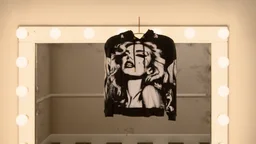
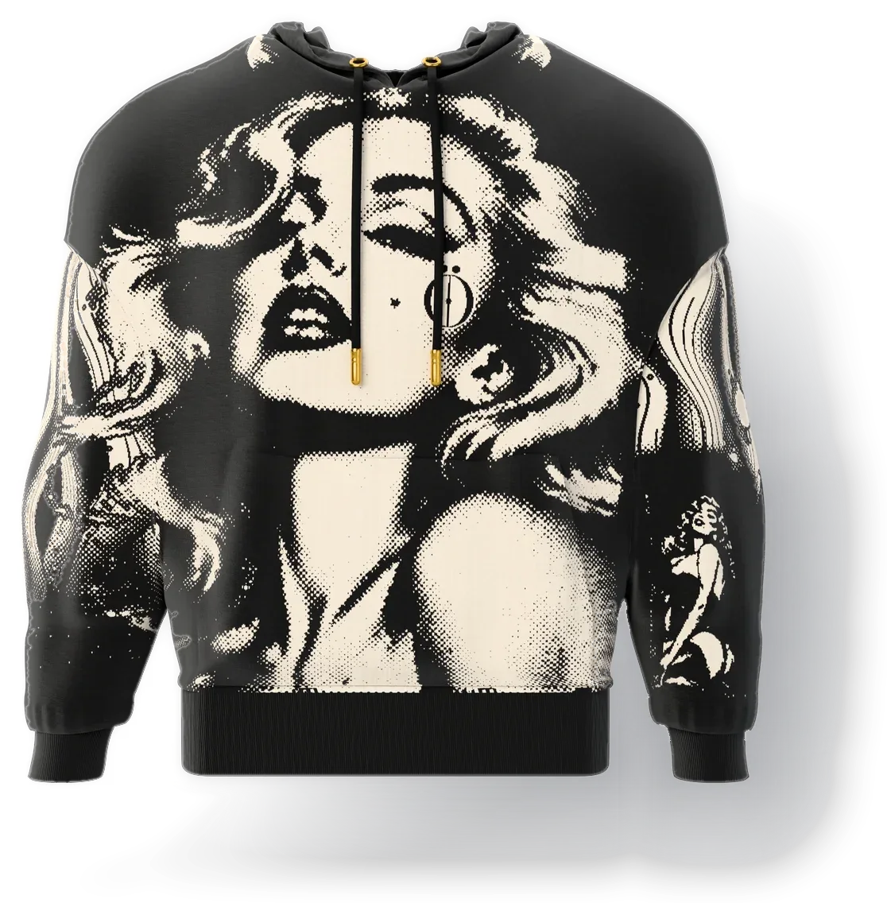
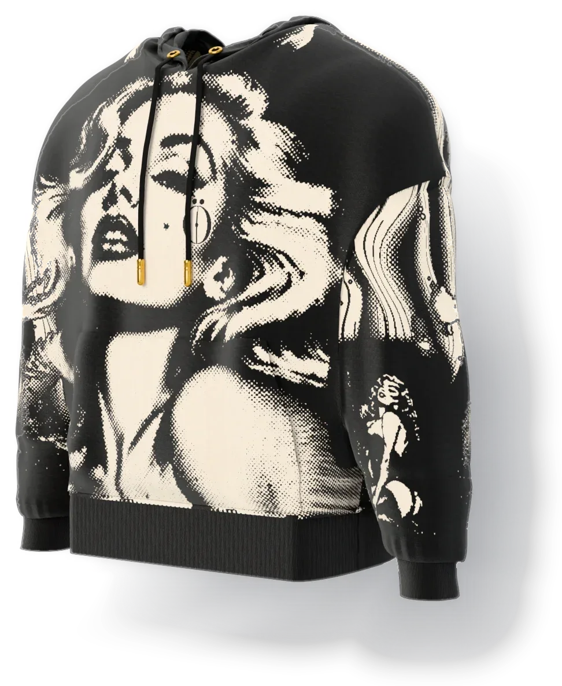
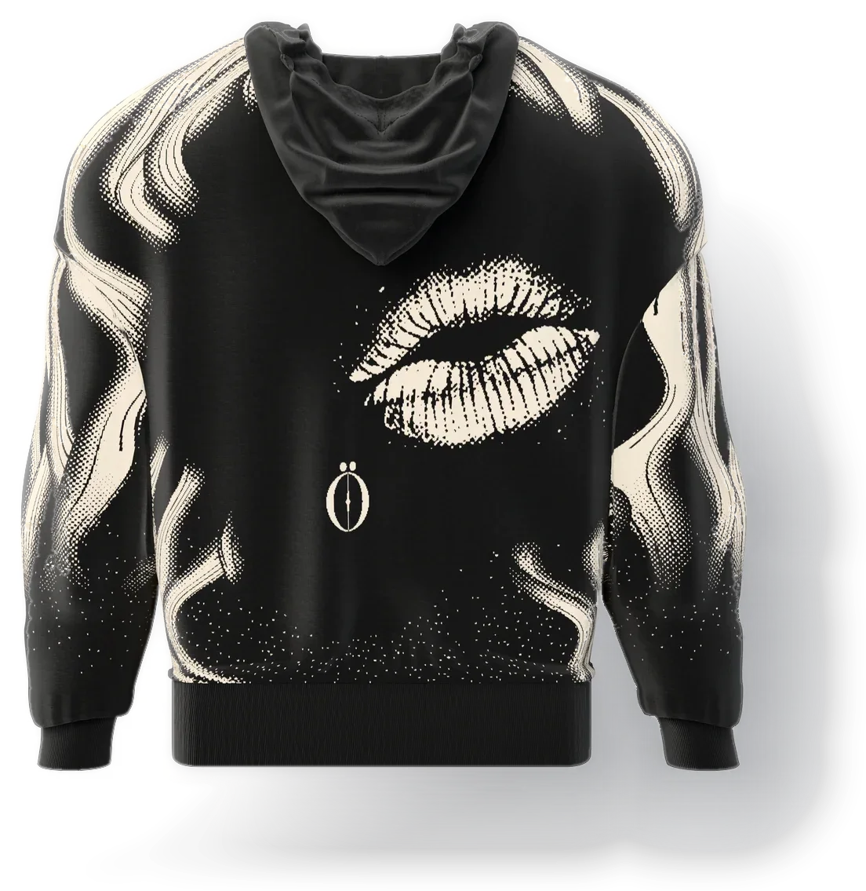
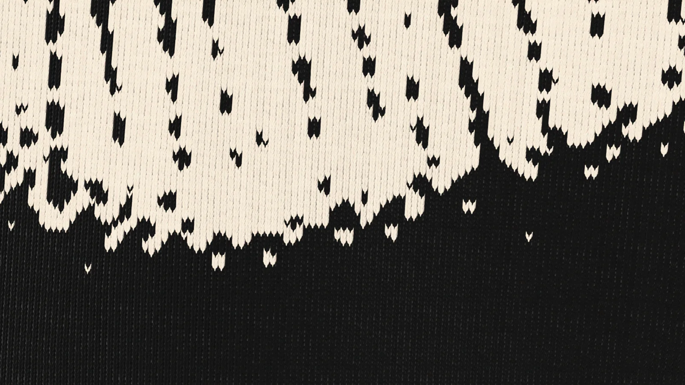
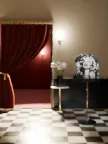

STAND-IN · img/heliodora/hero/master.* (the director’s signature shot: Her printed face where the reflection would be, ringed by the mirror’s bulbs (story/product-stills/DIRECTOR-SHOTS.md; its 144p preview stands in); 8K, 7680 × 4320)Chapter I · Knitwear
Heliodora
Knit hoodie

STAND-IN · img/heliodora/front/master.* (departments/apparel/new-pieces-2026-11/build/muse-allover/site/muse_front_16k.png; 16K, 8640 × 15360)front

STAND-IN · img/heliodora/three-quarter/master.* (three-quarter view, 8K; 8K, 4320 × 7680)three quarter

STAND-IN · img/heliodora/back/master.* (back view, 8K; 8K, 4320 × 7680)back
Chapter I
Heliodora
Knit hoodie
Knitted edge to edge, as a close-up fills the screen: her face on the front, her hair over the shoulders, and on the back the kiss, signed with the Ö.
- KNIT
- 28-GAUGE DOUBLE JACQUARD
- WEIGHT
- 300 GSM
- YARN
- 30S COMBED COTTON
- COLOURWAY
- BLACK / CREAM
- SIZE
- S · M · L · XL · XXL
USD 400 pre-sale USD 345
Made to order.
Keep a seatThe register sees the pre-sale first.
Details
- Pre-sale
- Made to order. We email your delivery date once production is confirmed. Cancel for a full refund any time before production starts.
- Returns
- Size exchanges within 14 days of delivery, unworn and with tags.
- Care
- Wash cold, inside out, on a gentle cycle. Dry flat. No tumble dryer, no bleach. Care
- Size
- The measurements
Close, at 100%

The kiss on the back

STAND-IN · img/heliodora/detail-material/master.* (the knit at stitch scale, 8K close-up; 8K, 7680 × 4320)The knit at stitch scale
The cuff, where her hair thins to single dots
In the world

STAND-IN · img/film/short-c1/master.* (C1, Heliodora: the coming attraction (until it lands, its last frame); 16:9, 3840 × 2160 MP4 or 8K still)C1, the coming attraction
How it is made
- It begins as a chart, one value for each stitch: the front alone is 722 stitches by 1,030.
- It is knitted as a 28-gauge double jacquard in black and cream, 11 stitches by 16 rows to the centimetre.
- Her portrait is the front; her hair runs onto the sleeves and thins to single dots by the cuff.
- On the back, one kiss, 208 by 133 mm, tilted 12 degrees, the mark beside it at 6.0 by 4.8 cm.
- Round them, 80 mm of plain black. Dust rises from the hem and stops at 31% of the height.
- The hood is plain black. It closes on black cords through gold eyelets, ending in gold tips.
Behind it: a second bed of stitches. Every stitch is knitted front and back, so no loose thread crosses the inside.
In the same scene